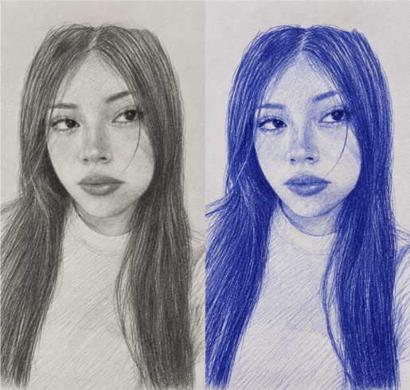

Para ti Anahi
La última carta
13 de septiembre de 2026

manuscrita
Para ti,
Quizá esta sea la carta que más me ha costado escribir.
No porque no sepa qué decir, sino porque sé exactamente qué quiero decir y, aun así, una parte de mí hubiera preferido no tener que decirlo.
Creo que hace un tiempo empecé a sentir que algo había cambiado.
Tus respuestas se fueron haciendo más distantes.
Las conversaciones dejaron de sentirse iguales.
A veces pasaban horas sin saber de ti, mientras yo seguía esperando ese mensaje que antes me hacía ilusión recibir.
Y sí, lo noté.
Quizá nunca me dijiste directamente que ya no tenías el mismo interés. Quizá simplemente empezaste a demostrarlo de otra manera.
Y creo que aprendí algo:
A veces las personas no necesitan decir que se están alejando.
Uno simplemente lo siente.
No te escribo esto para reclamarte por las veces que no respondiste, ni para decirte dónde estabas o con quién estabas hablando. No quiero convertir lo que alguna vez fue bonito en una discusión sobre mensajes, horas o conexiones.
Solo quiero ser sincero contigo.
Me dolió sentir que yo estaba intentando mantener algo que quizá tú ya habías dejado ir.
Y durante un tiempo seguí insistiendo.
Porque me importabas.
Porque todavía esperaba que las cosas volvieran a sentirse como antes.
Porque cuando alguien realmente te importa, uno suele encontrar muchas razones para quedarse, incluso cuando empieza a darse cuenta de que quizá ya no debería.
Pero también llega un momento en el que tienes que preguntarte cuánto tiempo quieres seguir esperando a alguien que ya no parece estar esperando por ti.
Y creo que ya encontré mi respuesta.
Me voy.
No porque hayas dejado de importarme.
Precisamente porque me importaste demasiado como para terminar convirtiendo ese cariño en insistencia.
No quiero perseguir tu atención.
No quiero tener que preguntarme cada vez si hice algo mal.
No quiero medir mi importancia por cuánto tardas en responderme.
Y tampoco quiero convertirme en alguien que reclama un lugar en la vida de otra persona.
Si ya no quieres estar, lo respeto.
Aunque duela.
Aunque me cueste.
Aunque una parte de mí todavía quisiera que fuera diferente.
Me quedo con lo bonito.
Con las conversaciones que sí quisimos tener.
Con las veces que me hiciste sonreír.
Con todo aquello que me hizo pensar que quizá podía existir algo entre nosotros.
Tal vez para otras personas fueron cosas simples, momentos sin demasiada importancia. Pero para mí significaron muchísimo.
No voy a decir que no significó nada.
Porque sí significó.
Y para mí, significó muchísimo más de lo que quizá alguna vez llegaste a imaginar.
Por eso no quiero terminar esto con odio.
Quiero terminarlo como empezó:
con cariño.

Quizá esta sea mi última forma de quererte:
Dejar de insistir.
Dejar de esperar.
Dejarte libre para encontrar a alguien a quien realmente quieras responderle, buscarle y tener cerca.(o quisas ya lo has encontrado, pero no eras capas de decirlmelo)
No te guardo rencor.
Solo estoy aprendiendo a aceptar que no puedo hacer que alguien tenga ganas de quedarse.
Y hoy creo que es momento de hacerlo.
Cuídate mucho.
Y ojala cumplas todo aquello que una ves me contaste, tus sueño y metas.
Lo que con amor/cariño/afecto empezó,
quiero que con amor/cariño/afecto termine.
Gracias por lo que fue.
Y adiós.
— Edwar Alama .